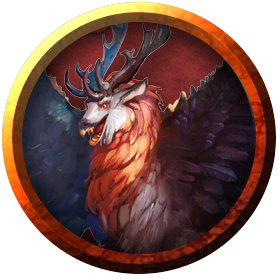

Peryton
Although this monstrous carnivore feeds on any creature, it prefers humanoids, especially elves, half-elves, and humans. When it kills a humanoid, a peryton rips out its prey's heart and takes it back to its nest to be devoured.
The peryton is a bizarre creature that blends the body and wings of a bird of prey with the head of a stag. Its strangest feature is its shadow, which appears humanoid rather than reflecting the creature's physical form. Sages postulate that the first perytons were humans transformed by a hideous curse or magical experiment, but bards tell a different tale of a man whose infidelity caused his scorned wife to cut out the heart of her younger, more beautiful rival and consume it in a ritual intended to forever win her husband's heart. The ritual succeeded until the woman's villainy was exposed. She was hanged for her crime, but the lingering magic of her foul ritual caused the carrion birds that feasted on her corpse to transform into the first perytons.
Unnatural Hunger. A peryton's reproductive cycle depends on the heart of a freshly killed humanoid. The organ must be consumed by a female peryton before she can reproduce. When a peryton consumes a heart, its shadow changes for a brief time to reflect its true monstrous form.
When attacking a humanoid, a peryton is single-minded and relentless, fighting until it or its prey dies. If a peryton is somehow driven away, it stalks lost prey from afar, attacking again when the opportunity arises.
Bane of the Mountains. Perytons roost atop mountain ridges and lair in high caves. They prey on creatures living or wandering in the vales below, and travelers on lonely mountain roads learn to keep a wary eye on the sky. Because normal weapons are less effective against perytons, the folk of the mountains know to avoid confrontations with these monsters at all costs.
Established settlements are attractive to perytons as a renewable food source. As such, village councils and local nobles often hire adventurers to eliminate peryton nests.
Environment
(FIXME)
Token

Peryton
Medium monstrosity, chaotic evil
- Armor Class 13 (natural armor)
- Hit Points 33 (6d8 + 6)
- Speed 20 ft., fly 60 ft.
STR DEX CON INT WIS CHA 16 (+3) 12 (+1) 13 (+1) 9 (-1) 12 (+1) 10 (+0)
- Proficiency Bonus +2
- Saving Throws
- Damage Vulnerabilities
- Damage Resistances bludgeoning,piercing,and slashing from nonmagical attacks
- Damage Immunities
- Condition Immunities
- Skills Perception +5
- Senses passive Perception 15
- Languages understands Common and Elvish but can't speak
- Challenge 2
Dive Attack. If the peryton is flying and dives at least 30 feet straight toward a target and then hits it with a melee weapon attack, the attack deals an extra 9 (2d8) damage to the target.
Flyby. The peryton doesn't provoke an opportunity attack when it flies out of an enemy's reach.
Keen Sight and Smell. The peryton has advantage on Wisdom (Perception) checks that rely on sight or smell.
Actions
Multiattack. The peryton makes one gore attack and one talon attack.
Gore. Melee Weapon Attack: +5 to hit, reach 5 ft., one target. Hit: 7 (1d8 + 3) piercing damage.
Talons. Melee Weapon Attack: +5 to hit, reach 5 ft., one target. Hit: 8 (2d4 + 3) piercing damage.